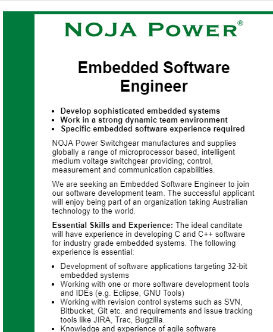
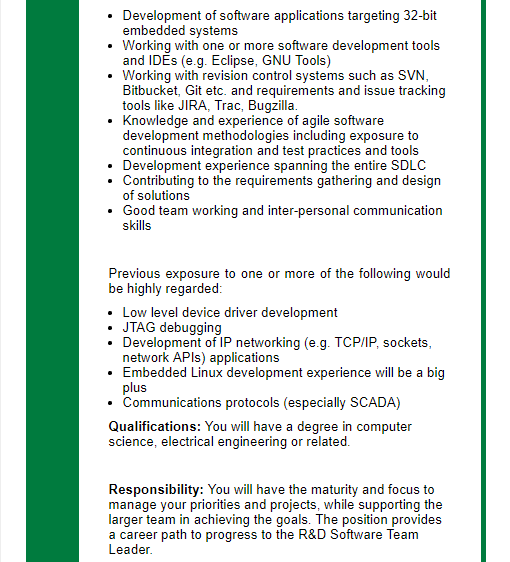
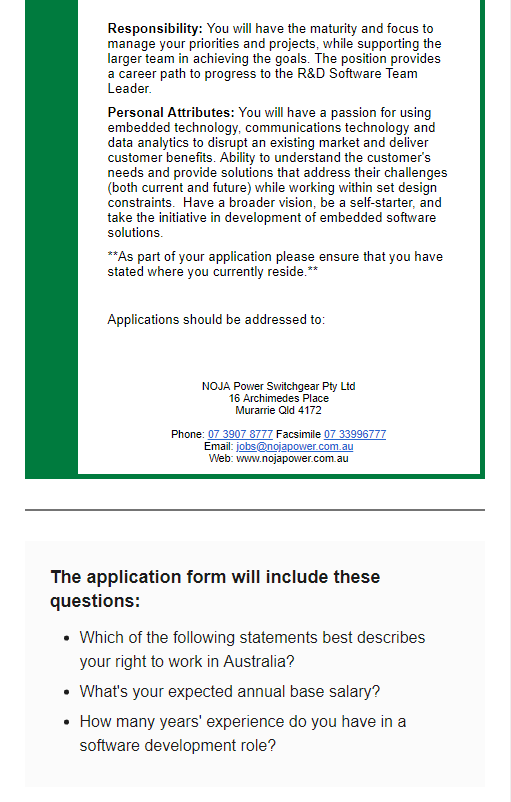

I was born and grew up in Melbourne. Some of my great-grandparents came from Russia, and some from Britain. I have completed primary school at Eastwood Primary School, and have been studying at home for my secondary school education. I have completed two online courses prior to this one – The Elements of Computing Systems (Nand2Tetris) part one and two. Certificate of completion is available here and here. I currently communicate using Auslan, and written English. Since I am deaf, I cannot hear or speak English. Some of my hobbies include playing basketball, playing with my go-kart, and programming games in Lua on my Ti-Nspire CX CAS calculator.
I am very interested in low-level computing and programming, mainly programming in C and Assembly. I have had some experience programming in both languages and I want to further my knowledge.
My interest in IT officially began when I was about eight years old, and my neighbour left her old computer on her nature strip, so I brought it home and connected it and got it to work successfully!
I chose to come to RMIT because they have the most interesting and practical courses, and also because they have good support for Auslan interpreters.
I expect to gain more knowledge on how computers and programming works, and how to work with IT in teams using professional tools such as Github.
My ideal job is working with something low-level, such as an embedded software engineer. Link to the job on Seek is available here.
  The job position is to develop embedded software for processors in electrical switchboards. I find this position appealing because I have always been a fan of programming in low-level languages and learning how processors work.
This job requires a degree in computer science, electrical engineering or something similar. The list of skills required is big:
My plan to acquire all the skills required to gain this job is to complete the Bachelor of Information Technology at RMIT, then further my studies by undertaking a Masters degree, specialising in embedded programming and C/C++ programming.
I undertook the free online Meyers-Briggs test at here. The result: I am a Virtuoso ISTP-T.
I also undertook the learning styles test at here. The result: I am a visual/tactile learner. My scores were: Auditory-20% Visual-40% Tactile-40%.
For a further online test, I chose the career test – designed to tell you which career would be perfect for you, available here. I found out that I am a Technician, Conventional, Uninhibited, Values Oriented and Maximizing.
I think those tests showed me that I am a detail-oriented person, which is something I didn’t realise. I also found out that I am not good with money, which should be obvious but I had no idea about that until now. The results of those tests will probably influence my behaviour in a team by showing that I am probably not a good team leader and that I always take my time to make sure that everything is perfect. Taking this into account when forming a team, I need to make sure that: 1) I am not the team leader. 2) I should start work early on my tasks so I can complete them to my highest standards.
My project idea is to build a Nintendo Entertainment System (NES) emulator in Minecraft, without using the command block. I plan to construct an entire NES out of redstone – using pistons, redstone torches, redstone repeaters, switches, etc. It will have a working 6502 CPU, 2KB RAM and 6 bit video output. It will have the ability to play NES ROMs, and have emulated controller support via Minecraft buttons. I will use redstone to build elementary logic gates such as AND, NOT and OR then build the console on the top of those gates. Flip-flops can be built to store 1-bit values and then stored in a row of 8 for a single 8-bit register.
The thing keeping me motivated to do this project is the fact that I am building a game console inside of a game! I have always loved video game consoles and building one from scratch is enormous fun and very educational and will give me a lot of skills which are valuable for future employment. Another reason why I want to do this project is because I really want to own a NES, but their rarity and high price force me to look elsewhere to play video games. The solution is to use an emulator, which I have made myself!
The NES will be made entirely out of redstone, without the aid of the command block. It will consist of a 6502 CPU.
Normally, the CPU runs at around 1.79 or 1.66MHz, depending on the region. Unfortunately, due to Minecraft running on
Java, which is an interpreted language (and the speed of my actual computer’s CPU being mediocre), achieving that speed
in game is very difficult. Thus the virtual console will run much slowly than the actual console. The CPU’s clock, in
Minecraft, will be powered by a three redstone torches (which are really NOT gates in disguise) in a loop, effectively
creating a clock. This clock will power the data flip-flops which “remembers” a bit every cycle, unless being written
to. As for the game ROM cartridges in real life, I will build up an array of about, say, 512K of 8-bit registers and
“lock” them by removing the ability to write to them, thus effectively making them read-only. I will then search for
a desired game online and download its binary code, and then manually hard-code each bit into each data flip-flop. I
took a course on how to build a CPU, RAM and a ALU (Arithmetic Logic Unit) so the process of building the processor
should be relatively straightforward.
As for the controller, I visualise the player looking at the screen, the controller below them – in form of simple buttons
which corresponds to real controller. There are only eight simple digital buttons, so that means we don’t have to mess
around with fiddly analogue signals.
The great thing about the 6502 CPU is that it was one of the most popular CPUs back in the 1980s and it is still popular
today. Thus there is a mountain of documentation about it which will be a necessity for learning how to build one. It is
a common challenge for programmers to try and emulate it on modern computers through a language like C++.
I may add the ability to automatically flash the ROM with a game image through the aid of a Minecraft modification, although
that may be breaking some rules. In my opinion, the trickiest part to build will be the screen, as the NES had a 6-bit video
palette, so there are 64 different colours available for each pixel, which in Minecraft will be very tricky to build with
just redstone, pistons and a limited range of blocks. Another tricky chip to port to redstone is the PPU
(Picture Processing Unit), which is an early version of the modern GPU (graphics processing unit). It itself has a 2KB
RAM for drawing graphics, and has specialised circuitry designed to draw graphics quicker than the CPU.
If I was to actually do this project, I would happily upload the world online and let anyone try out my emulator.
It’s pretty amazing if you think about it: there are so many layers of different computer architectures on the
top of each other. At the bottom is my actual computer – an x86-64 architecture. Next layer is the Java virtual machine
running on the top of x86. Next is the Minecraft game, which finally interprets the NES emulator down all the way to x86
– four layers of completely different instruction codes set!
For the technology part, all I am using is my humble x86-64 architecture computer. As for the software part, I need the Java runtime environment, which Minecraft runs on. Minecraft itself is needed of course. Java is free to use, but Minecraft is $35AUD. For extensive redstone projects, which if done all by hand (500,000 data flip-flops!) will take a very long time. A great online tool that lets you copy-paste redstone contraptions which saves a lot of time is available here. I also use a simple Web browser like Chrome to research about the 6502.
If the project was successful, anyone who has purchased Minecraft, will also have the ability to play classic Nintendo Entertainment System games by only going to the internet and downloading a map! Anyone thinking, “Oh, I wish I had a NES emulator in Minecraft,” would get their wish! This project will be a useful resource to the general public, because if they are interested to learn how the 6502 CPU works, they can download my map and have a look! I will make sure to leave plenty of signs describing how a particular component works.